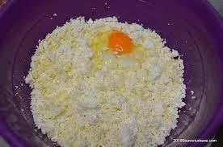
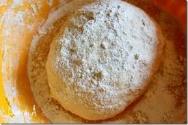
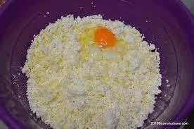
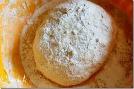

Ustensile necesare
- un castron
- un cutit
- o tava
- hartie de copt
- o razatoare
- rabdare si talent
Ingrediente si continut caloric
| Ingrediente |
Cantitate |
Kcal |
| Cascaval |
300g |
950 |
| oua |
3 |
450 |
| sare |
50g |
0 |
| aluat foietaj |
1 pachet |
400 |
| Total kcal |
1800 |
Pasi pentru preparare
- Aluatul de foietaj trebuie lasat cateva ore pentru a ajunge la temperatura camerei.
- Dupa ce ajunge la temperatura potrivita aluatul se taie in dreptunghiulete de dimensiuni egale.
- Se rade cascavalul si se amesteca bine cu cele 3 oua. Se adauga in compozitie si sarea.
- Compozitia se presara pe cate un dreptunghi de aluat. Deasupra se aseaza un alt dreptunghi de aluat pentru
a inchide compozitia.
- Pateurile se aseaza pe o tava cu hartie de copt. Se lasa la copt aproximativ 30 de minute.
Puteti urmari prepararea retetei in videoclipul urmator
Galerie de imagini
 Pateuri gata preparate

Ingrediente pentru pateuri

Aluat pentru pateuri
Pateuri gata preparate

Ingrediente pentru pateuri

Aluat pentru pateuri